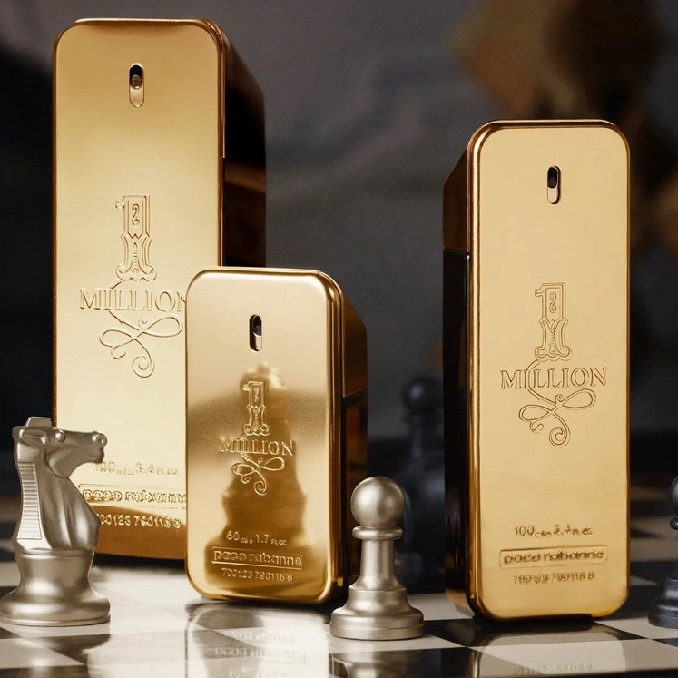

Impactos ambientais
A produção de perfumes envolve matérias-primas, embalagens e transporte. Atualmente, muitas marcas buscam reduzir desperdícios e desenvolver processos mais eficientes e sustentáveis.

Os perfumes são usados como forma de expressão pessoal e podem influenciar na percepção, identidade e experiências do cotidiano. O One Million ficou conhecido pelo perfil marcante e pela associação com sofisticação.
A produção de perfumes envolve matérias-primas, embalagens e transporte. Atualmente, muitas marcas buscam reduzir desperdícios e desenvolver processos mais eficientes e sustentáveis.

O uso consciente inclui evitar desperdícios, reutilizar embalagens quando possível e considerar escolhas que reduzam impactos ambientais ao longo do ciclo do produto.